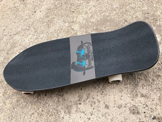
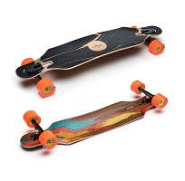
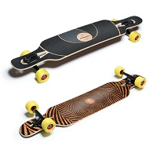
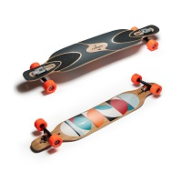
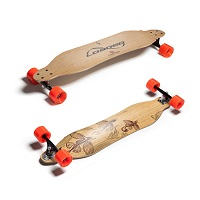
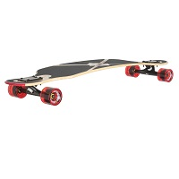
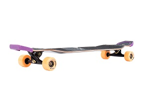
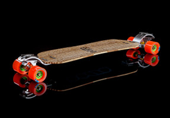

vsenadosku.ru Тренинг: Базовые элементы скейтбординга.
- Урок 1
- Дополнение к первому уроку. Как ездить на скейте.
- Урок 2 /упражнение на баланс .Monsterwalk
- Урок 3 /Fakie Fs Revert.
- Урок 4 /Fakie Bs Revert, Nollie Fs Revert ,Nollie Bs Revert
- Урок 5 /съезжать с небольших препядствий
- Урок 6 /заехать на наклонную поверхность и съехать с неё
- Урок 7 /как правильно раскачиваться в рампе, чтобы набирать скорость.
- Урок 8 /развороты на наклонах
- Урок 9 /фронтсайд и бэксайд развороты в рампе (Heelturn и Kickturn)
- Урок 10: Как делать Олли
- Concrete Wave Spring 17 Buyer's Guide
- Loaded Catalog 2017
- Loaded & Orangatang catalog 2014
- Original Skateboards: Holiday Catalog 2013/2014
- alternative longboards - Collection 2015
- JUCKER HAWAII Longboards Catalog 2013/14
- Sector 9 2018 Delivery One
- 2018 YEARLY LINE SECTOR 9
- 2016 Sector 9 Skateboard Co. - Catalog
- Sector 9 2012 Technical Guide
- Root Longboards 2017
- snowgo.ru
rally cat
dinghy
tugboat
NEVER SUMMER HEIST
Arbor Axis
Landyachtz Drop Carve Oceanspray
Landyachtz Bamboo Totem Taka Owl
LANDYACHTZ 15 BAMBOO BATTLE AXE
Sector 9 Kiss of death
Sector9 LOOKOUT
- Как кататься на лонгборде и скейтборде. Видео урок .2017
- Как правильно стоять и набирать скорость на лонгборде. Видео урок .2017
- Longboarding 101 - How to Stop; Foot Breaking, Advanced Carving, Coleman Slide .2016
- Как начать кататься на скейтборде
- REAL BASICS [SKATEBOARDING START TUTORIAL #0.0]
- DECK [SKATEBOARD GEAR INSTRUCTION#1.0]
- TRUCKS [SKATEBOARD GEAR INSTRUCTION #2.0]
- PUSHING SKATEBOARD [SKATEBOARDING START TUTORIAL #1.0]
- DROP IN [SKATEBOARDING TRANSITION TUTORIAL #1.0]
- ROCK TO FAKIE [SKATEBOARDING TRANSITION TUTORIAL #2.0]
Пампинг
Kарвинг помогает контролировать скорость. Техника карвинга заключается в поочередном смещении веса тела с пятки на носки и обратно, это катание дугами, очень похожее на катание на сноуборде. вы делаете s-образную фигуру во время катания. По сути, вместо того чтобы ехать по прямой, вы едете змейкой. Это помогает вам замедлиться и дает больше чувства контроля над доской. Если вы не научитесь грамотно карвить, вы будете постоянно терять контроль над скоростью, особенно на крутых (да и не очень) спусках.
оттолкнитесь задней ногой и начните прямой спуск. Перед тем как вы сильно разгонитесь, опять слегка согните колени, надавите носками на лонг, а пятки потяните вверх. При этом старайтесь не отрывать пятки от доски, перенесите вес на другую сторону и продолжите спуск. Чем шире будет ваша дуга, тем медленнее будет спуск.
Основы карвинга на лонгборде. Видео урок .2015
Базовые уроки по лонгбордингу. Урок #5 .2012
- Как делать резкие повороты (snakeride) на лонгборде. Видео урок .2017
- TICK-TACK [SKATEBOARDING START TUTORIAL #2.0]
- Как заехать на бордюр на лонгборде. Видео урок .2015
- Как делать manual на лонгборде. Видео урок .2015
- Loaded Boards Trick Tip | Early Grabs with Adam Colton .2010
- Skate: old school tricks
Олли
- OLLIE [SKATEBOARDING TUTORIAL#1.0]
- Как сделать олли
- Loaded Boards Trick Tip | Longboard Ollie with Dane Webber
- Как делать ollie на лонгборде. Видео урок.
- Как делать Ollie с Ашотом Шабояном
- Почему у тебя не получается ОЛЛИ
- Как делать олли на ходу
- OLLIE OBSTACLES [SKATEBOARDING TUTORIAL #1.1]
- Как сделать олли на бордюр
- Как делать олли выше
- OLLIE NOSEBONE [SKATEBOARDING TUTORIAL#1.5]
Слайды
- 6 STAND UP SLIDES FOR BEGINNERS | LoadedTV S2 E8 .2017
- Как резко тормозить слайдом на лонгборде. Видео урок .2016
- HOW TO SLIDE AND FREERIDE YOUR LONGBOARD | LoadedTV S3 E6 .2018
- Loaded Boards Trick Tip | Longboard Slide Help from Louis Pilloni and Adam COlton .2007
- Longboarding Trick Tip | Slide Help #2 with Louis Pilloni and Adam Colton .2007
- FRONTSIDE POWERSLIDE [SKATEBOARDING START TUTORIAL #5.0]
- Bones Brigade - Future Primitive 1985
- Powell Peralta Bones Brigade 3 - The Search For Animal Chin (1987)
- Powell Peralta - Bones Brigade 4: Public Domain (1988)
- Powell Peralta - Bones Brigade 5: Axe Rated (1988)
- Powell Peralta - Bones Brigade 6: Ban This (1989)
- Powell Peralta - Bones Brigade 7: Propaganda (1990)
- Powell Peralta - Bones Brigade 8: Eight (1991)
- ZVP - Episode 1 - The Beginning
- ZVP- Episode 2- The Original
- 1990 - Sk8 TV - Boards
- 1990 - Sk8 TV - Redrill
- 1990 - Sk8 TV - Grip Tape
- 1990 - Sk8 TV - Board Rails
- 1990 - Sk8 TV - Skate Museum
- 1990 - Sk8 TV - Powell Peralta Screen Printing
- 1990 - Sk8 TV - Venture Trucks Factory
- 1990 - Sk8 TV - Powell Peralta Skate Decks
- 1990 - Sk8 TV - Skate Shoes with Lance Mountain, Skate Master Tate and Matthew Lynn
- 1990 - Sk8 TV - Wheels
- Street Skating With Rob And Natas - 1988 - FULL VIDEO
- Speed Wheels-Risk It (1990)
- Blockhead Skates Splendid Eye Torture 1989
- 1987 Santa Cruz - Wheels of fire
- 1989 Santa Cruz - Streets On Fire
- Santa Cruz Strange Notes Vol 1
- Santa Cruz Strange Notes Vol 2
- Santa Cruz Strange Notes Vol 4
- Santa Cruz Strange Notes Vol 5
- Santa Cruz Strange Notes Vol 6

|
Length: 30.14” Width: 10.538” Wheelbase: 16” |
|

|
Length: 38.4” (97.5 cm) Width: 8.6” (22 cm) Wheelbase: 28.25” (71.76 cm) Weight Deck: 2.9 lbs (1.3 kg) Complete: 6.5 lbs (2.9 kg) w/Fat Frees, 7.4 lbs (3.4 kg) w/Kegels Flex 1: 170-250+lbs / 75-115+kg Flex 2: 75-200+lbs / 35-90+kg |
|

|
Length: 39" / 99cm Width: 8.75" / 22.25cm Wheelbase (Inner): 27" / 68.5cm Weight: Deck: 3.1 - 3.5lbs / 1.4-1.6kg Complete: 6.6 - 7lbs / 3 - 3.2kg Flex 1: 170-270+ lbs / 75-122+ kg Flex 2: 130-210+ lbs / 59-95+ kg Flex 3: 80-170+ lbs / 36-77+ kg |
|

|
Length: 42.8" / 109 cm Width: 9" / 22.9 cm Wheelbase: 31.5" / 80 cm Weight: Deck: 3.-3.6lbs / 1.4-1.6kg Complete: 7.0 - 7.6 lbs / 3.2 - 3.4 kg Flex 1: 170-270+ lbs / 75-122+ kg Flex 2: 100-185+ lbs / 45-84+ kg Flex 3: 75-150+ lbs / 35-68+ kg |
|
|
Length: 38" / 96.5cm Width: 8.63" / 22cm Wheelbase (Inner): 26.5" / 67.3cm Wheelbase (Outer): 27.4" / 69.6cm Weight: Deck: 3.bs / 1.4kg Flex 1: 170-270+ lbs / 75-122+ kg Flex 2: 125-215+ lbs / 55kg-95kg Flex 3: 75-175+ lbs / 35kg-80kg |
|

|
Length: 42"/107cm & 38"/98cm Width: 8.5"/21.5cm Wheelbase: 35"/88.9cm & 31.5"/80cm Weight: Deck: 2.7 - 3.8lbs / 1.2 - 1.7kg Complete: 6.9 - 8lbs / 3.1 – 3.6kg Flex 1 (42"/107cm): 175-230+lbs / 80-105+kg Flex 2 (42"/107cm):130-210+ lbs / 59-95+ kg Flex 3 (38"/98cm): 150-210+lbs / 68-95+kg Flex 4 (38"/98cm): 120-170+lbs / 55-77+kg Flex 5 (38"/98cm): 80-140+lbs / 35-65+kg |
|

|
Length: 42” Wheelbase: 30” Flex 1: 80-140 lbs / Flex 2: 120-170 lbs / Flex 3: 160-220 lbs / |
|

|
Length: 37.75” Wheelbase: 26” |
|

|
Length: 34” Wheelbase: with the Brackets: 31.1"/79cm |
|

{kind=link}
{kind=link}
{kind=link}
{kind=link}
{kind=link}
{kind=link}
{kind=link}
{kind=link}
{kind=link}
{kind=link}
{kind=link}
{kind=link}
{kind=link}
{kind=link}
{kind=link}
{kind=link}
{kind=link}
{kind=link}
{kind=link}
{kind=link}
{kind=link}
{kind=link}
{kind=link}
{kind=link}
{kind=link}
{kind=link}
{kind=link}